Historia del Cafe
Origen
La historia del café empieza en el cuerno de África, en Etiopía, sobre el siglo IX. Se sabe el origen
geográfico, la provincia de Kaffa, pero no el momento exacto, ya que no existen documentos sobre cuándo
el hombre empezó a consumir granos de café.
Cosecha
El café, hasta que llega a la taza, tiene un largo recorrido por delante que comienza con la cosecha, es
decir, con la recolección del café. Un trabajo muy minucioso e importante que recae en los cafetaleros o
cultivadores de café
Postcosecha
Una vez recolectadas las cerezas, llega el proceso de extracción del grano de café que hay que separar
de la pulpa. Para ello existen dos métodos: seco y húmedo.
Seco: consiste en dejar los frutos al sol durante semanas hasta que se secan y se puede separar el
grano. Actualmente no se utiliza mucho este método.
Húmedo: primero pasa por una despulpadora para separar el grano del resto del fruto. Después se retiran
los restos de mucílago bien por medios mecánicos o dejando fermentar los granos unas horas en agua.
Finalmente se levan bien y se dejan secar hasta que tienen entre un 10-12% de humedad.
Delicias del Cafe
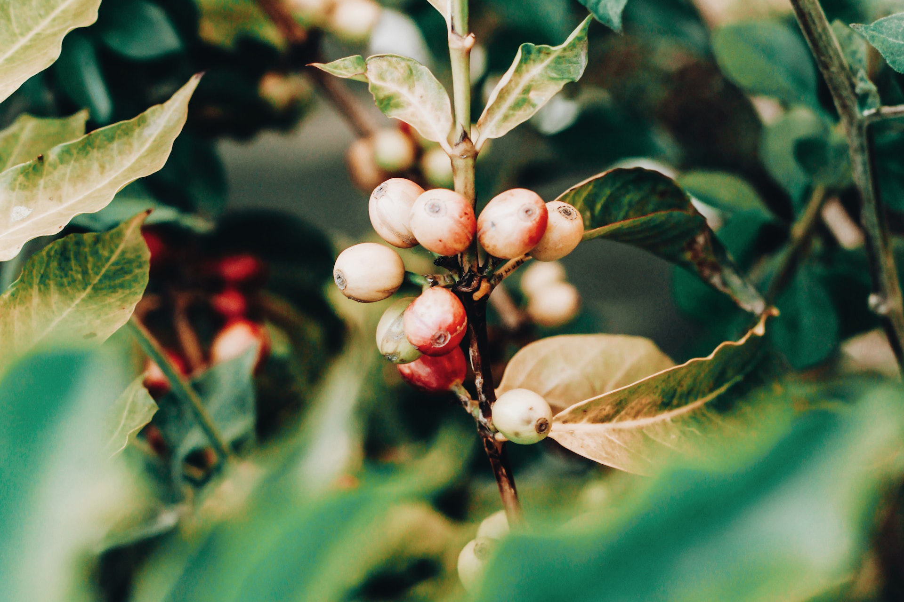
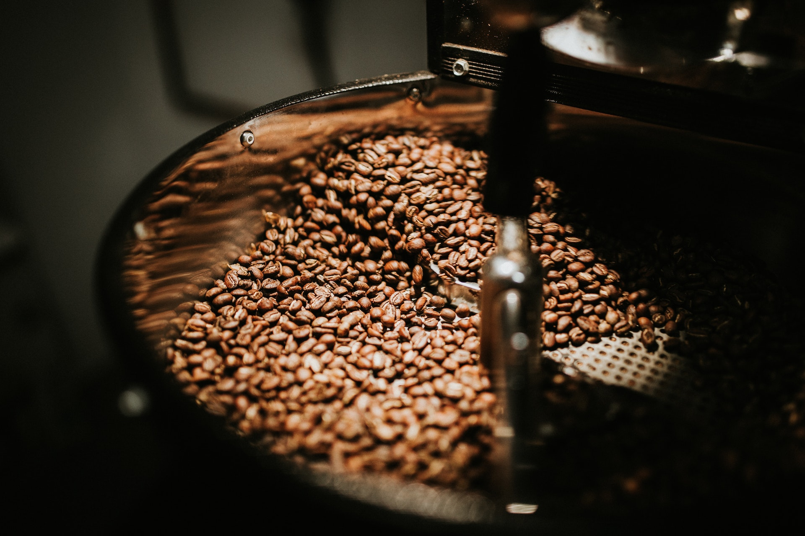
Cafe Con Leche
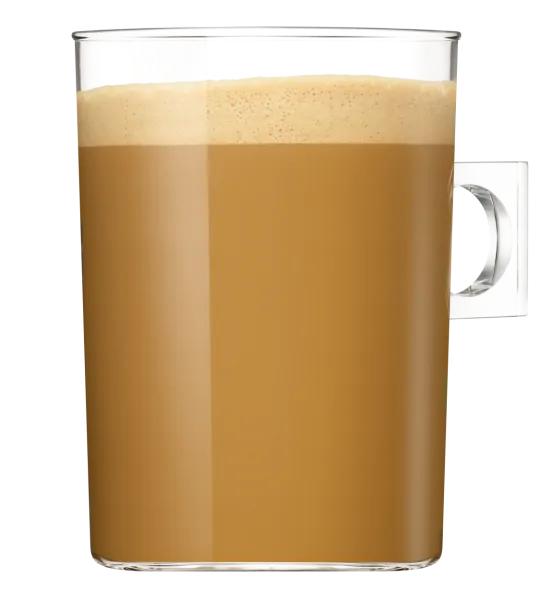
Ingredientes
Leche
Cafe
Preparacion
Prepara un espresso en taza o vaso.
Vierte la leche caliente, templada o fría en la taza o vaso (1/2 café y 1/2 leche).
Endulza con la cantidad de azúcar a tu gusto.
Espresso
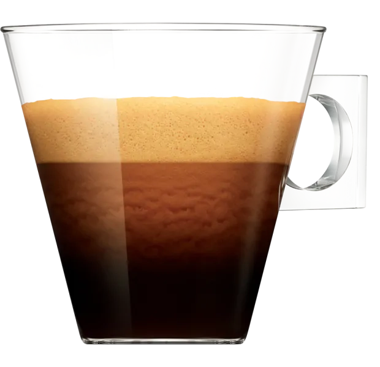
Ingredientes
Agua
Cafe
Preparacion
Prepara entre 7-9 gr de café molido
La cantidad de agua para el espresso es de 30-40 ml de agua, a unos 88-92ºC.
Este agua pasará a través del café con una presión para la extracción de mínimo 9 bares.
El tiempo de extracción será de unos 25-30 segundos
Cafe Corto
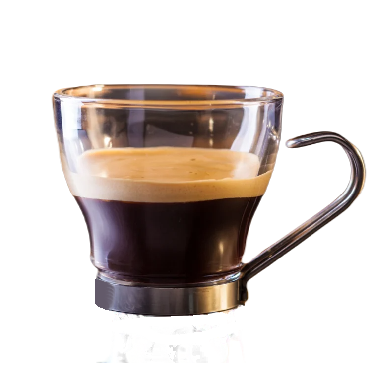
Ingredientes
Agua
Cafe
Preparacion
Prepara entre 7-9 gr de café molido.
La cantidad de agua para el Ristretto es de unos 25 ml de agua, a unos 88-92ºC.
Este agua pasará a través del café con una presión para la extracción de mínimo 9 bares
El tiempo de extracción será de unos 15-20 segundos.
Cafe Largo
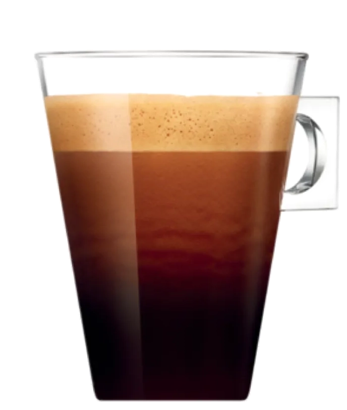
Ingredientes
Agua
Cafe
Preparacion
Prepara entre 7-9 gr de café molido.
La cantidad de agua para el Ristretto es de unos 25 ml de agua, a unos 88-92ºC.
Este agua pasará a través del café con una presión para la extracción de mínimo 9 bares
El tiempo de extracción será de unos 15-20 segundos.
Cafe Americano
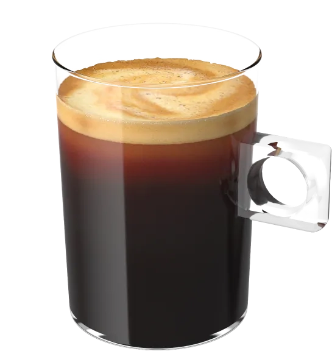
Ingredientes
Agua
Cafe
Preparacion
Prepara un espresso en una taza o vaso grande.
Calienta agua en una tetera
Vierte el agua caliente sobre el espresso ya preparado (la cantidad es al gusto).
Cafe Cortado
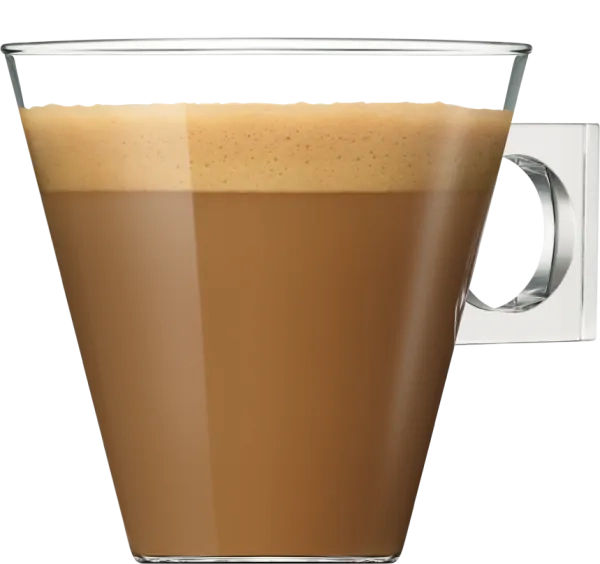
Ingredientes
Leche
Cafe
Preparacion
Prepara un espresso en taza o vaso
ierte un poco de leche caliente o texturizada (proporción de 1/3 leche y 2/3 de café).
Macchiato
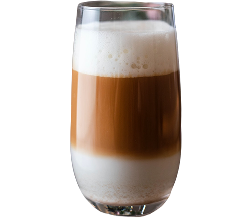
Ingredientes
Leche
Cafe
Preparacion
Prepara un espresso en una taza o vaso.
Vierte la leche espumada en menor cantidad que en el cortado, solo para manchar el café.
Cappuccino
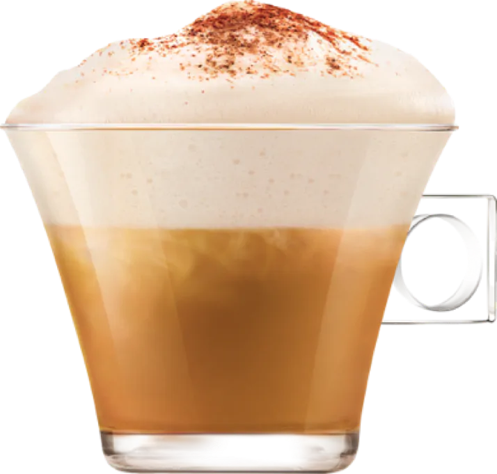
Ingredientes
Leche Texturizada
Cafe
Canela o Cacao en polvo
Preparacion
Prepara un espresso en una taza.
Emulsiona la leche con tu vaporizador o espumador.
Vierte la leche espumada sobre el espresso. (1/3 café, 1/3 leche vaporizada y 1/3 espuma de leche).
Espolvorea con un poco de canela o cacao en polvo por encima de la espuma de leche.
Cafe Latte
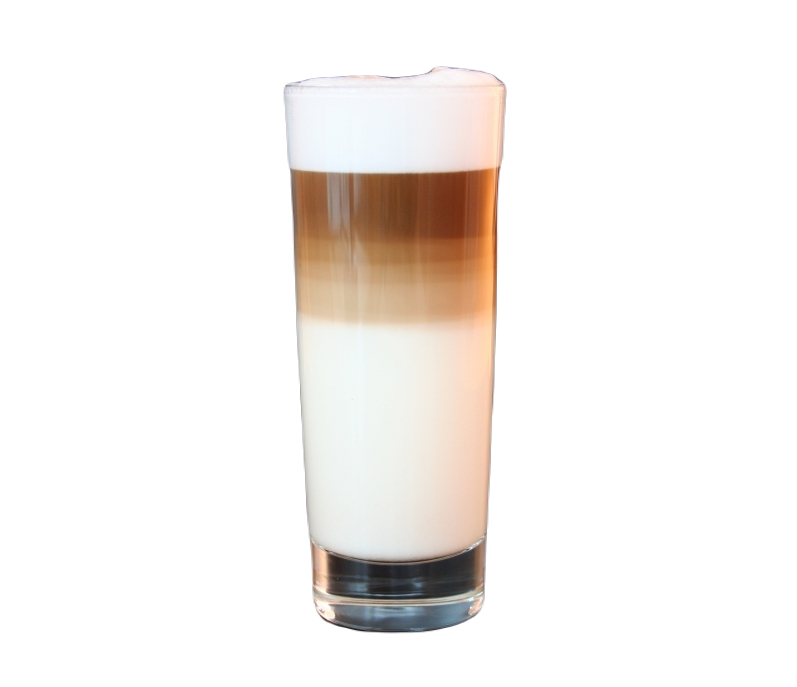
Ingredientes
Leche Texturizada
Cafe
Preparacion
Prepara un espresso en taza o vaso.
Vierte la leche espumada sobre el espresso (1/4 café, 2/4 leche vaporizada y 1/4 espuma de leche).
Puedes realizar diseños Latte Art al verter la leche.
Mocaccino
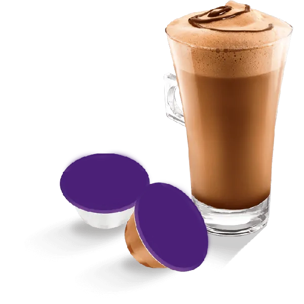
Ingredientes
Leche
Cafe
Salsa de chocolate
Cacao en polvo
Preparacion
Prepara un espresso en una taza o vaso.
Recubrir las paredes de la taza o vaso con la salsa de chocolate.
Remover para mezclar el café y el chocolate.
Vierte la leche espumada en el café con cholocate.
Decora por encima con cacao en polvo o con más salsa.
Latte Macchiato
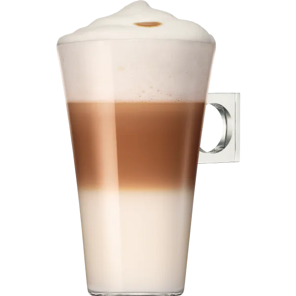
Ingredientes
Leche Texturizada
Cafe
Preparacion
Espuma la leche y viértela en un vaso grande (2/3 leche y 1/3 café).
Prepara un espresso (mejor en una jarrita de leche para facilitar el vertido).
Prepara un espresso y échalo lentamente en el vaso con la leche (se formarán 3 capas, quedando el
café en el medio).
Caramel Macchiato
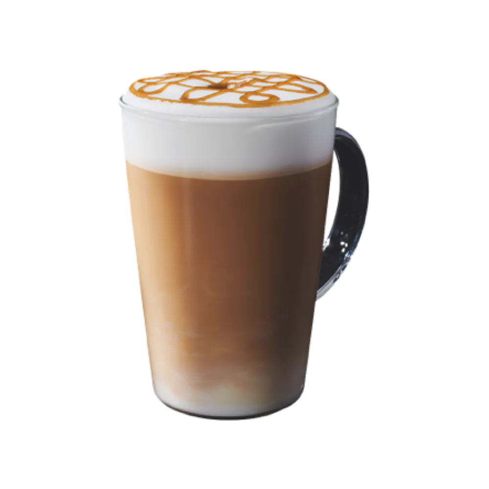
Ingredientes
Leche texturizada
Cafe
Salsa de caramelo
Preparacion
Echa un poco de la salsa de caramelo en un vaso grande.
Vierte la leche espumada en el vaso de la salsa.
Prepara un espresso y échalo lentamente.
Puedes decorar con un poco más de salsa por la superficie.